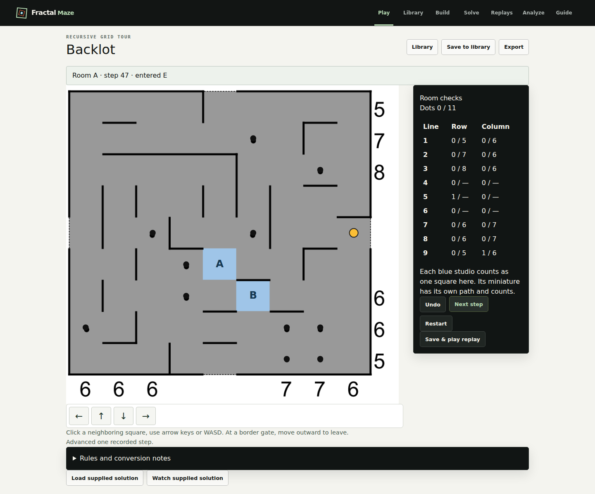
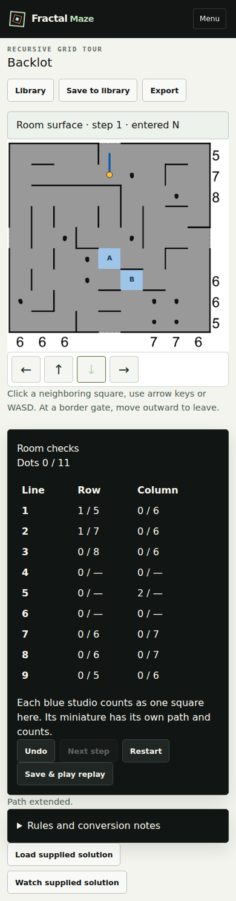
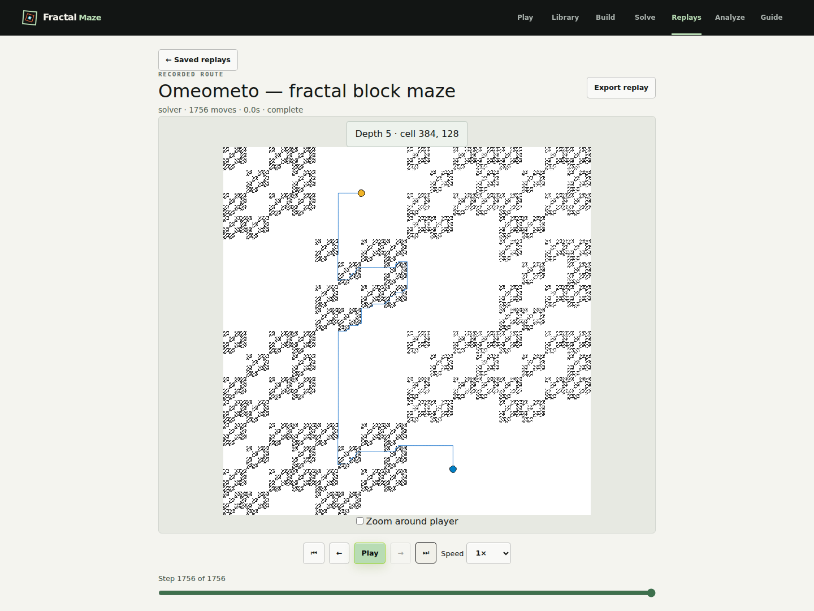
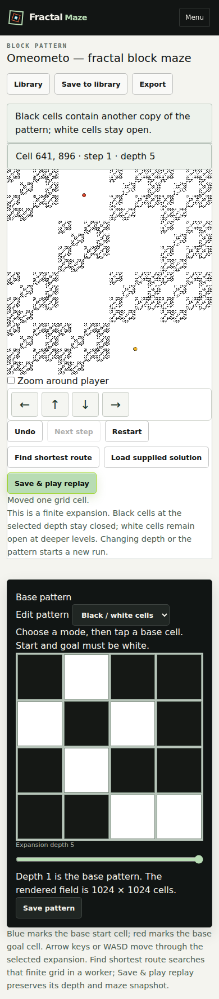
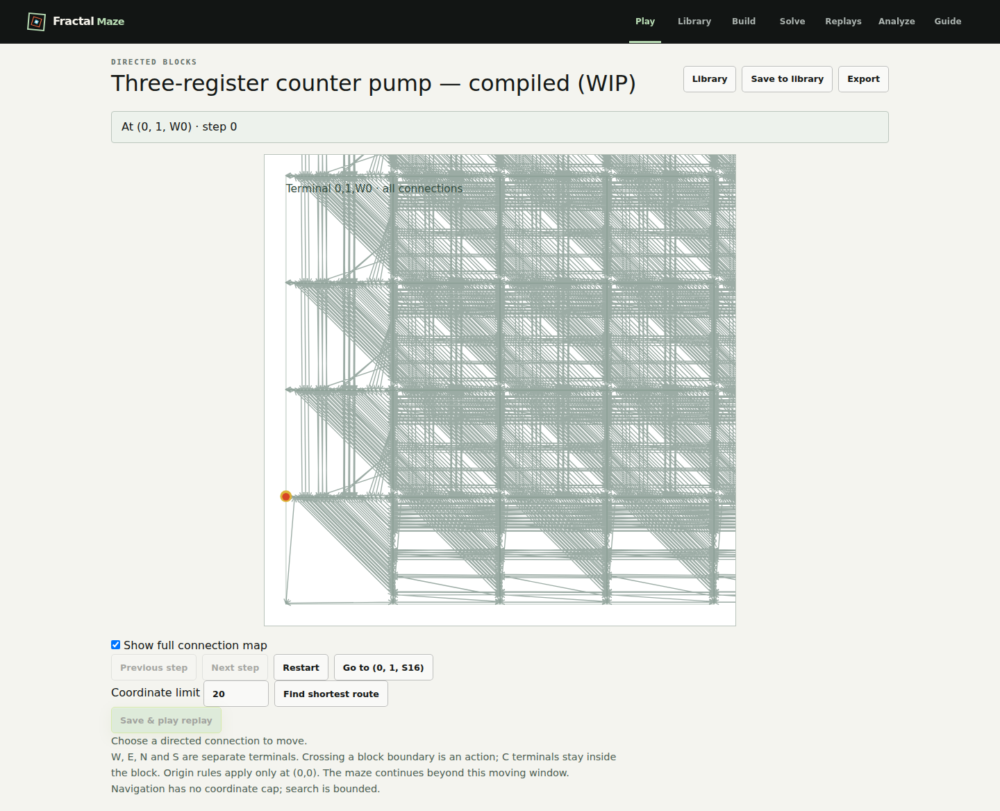
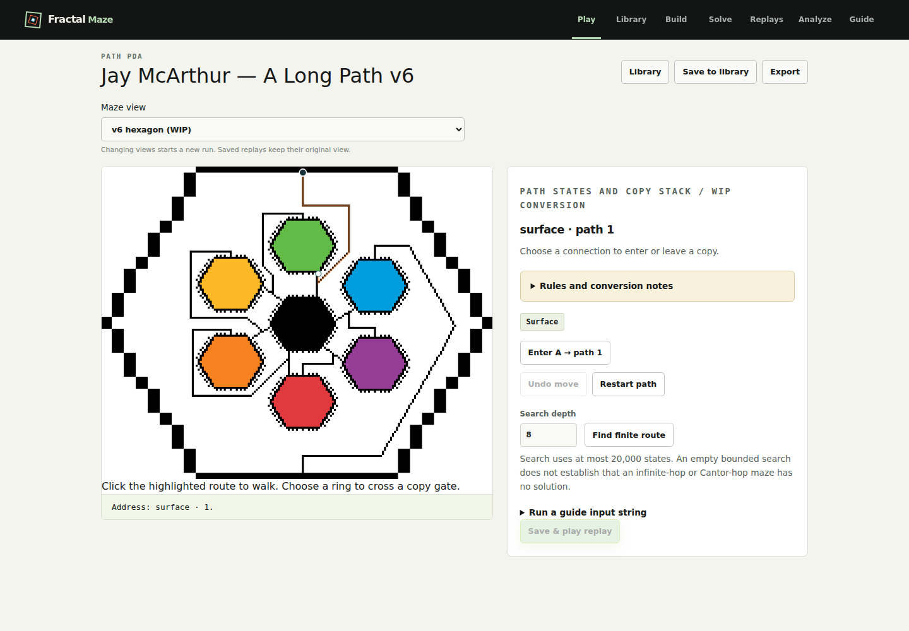
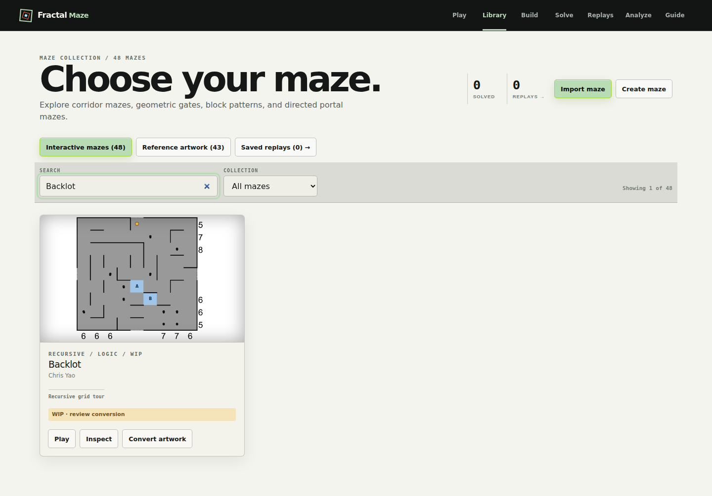

Current maze review
Backlot and Omeometo native rules, plus the v6 PDA-first source view. Source interpretations retain WIP notes.
Backlot: optional tour enters studio A

Backlot: phone movement and room checks

Omeometo: depth-five replay witness

Omeometo: phone navigation and depth

Regenerated three-register counter pump: WIP atomic model

Jay v6: black routes, top start, bottom finish, WIP anchors

Library: one WIP Backlot entry
